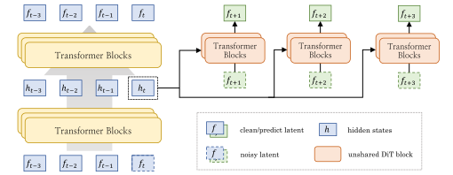
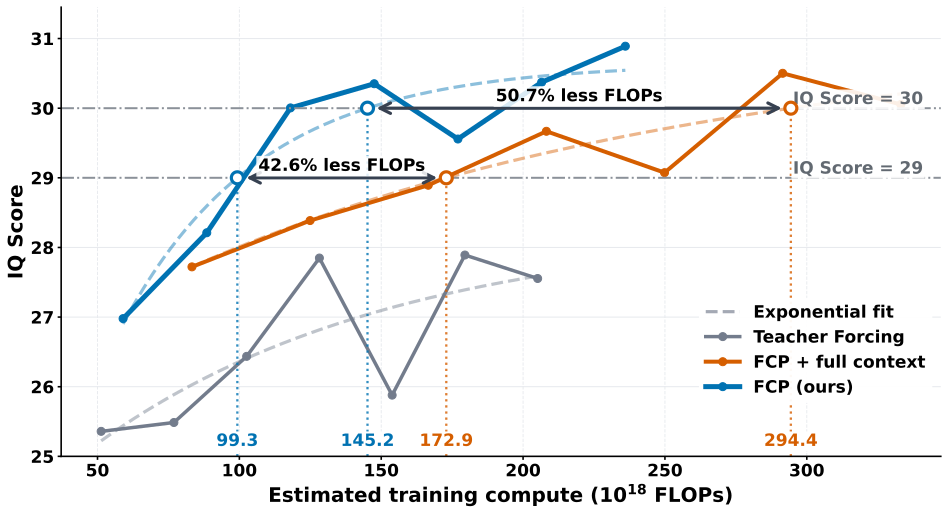

If you learn to drive by watching only the next second of road, you can just copy the car in front. If the coach also asks "where will that cyclist be in five seconds?", you have to understand how traffic moves. On test day you simply drive; the coach's questions were only for practice.
바로 다음 1초의 도로만 보며 운전을 배우면 앞차를 따라 하기만 해도 된다. 강사가 "저 자전거는 5초 뒤에 어디 있을까?"까지 물으면 교통이 어떻게 흐르는지 이해해야 한다. 시험 날에는 그냥 운전하면 되고, 강사의 질문은 연습용이었을 뿐이다.
How it works: side predictors that exist only in training작동 방식은 학습 때만 있는 보조 예측기
The generator and its rollout stay exactly the same; only extra heads hang off its hidden states during training. No pretrained encoder is needed, because the targets are later chunks of the same video.
생성기와 롤아웃 방식은 그대로이고, 학습 때만 은닉 상태에 보조 헤드가 붙는다. 목표가 같은 영상의 뒷 청크라서 사전학습 인코더가 필요 없다.

- Tap the hidden states.은닉 상태 꺼내기.Features from four generator blocks for chunk k, from both the clean history and the noisy target, are fused by a small MLP.k번째 청크에 대해 생성기 블록 네 곳에서 깨끗한 과거와 잡음 섞인 목표 양쪽의 특징을 꺼내 작은 MLP로 합친다.
- Predict in parallel.병렬로 예측.One head per offset, conditioned through token-wise AdaLN; chaining heads would leak near-future information into the far ones.미래 거리마다 헤드 하나를 두고 토큰 단위 AdaLN으로 조건을 준다. 헤드를 사슬로 이으면 가까운 미래 정보가 먼 헤드로 새어 나간다.
- Train jointly, then drop.함께 학습하고 버리기.The total loss is teacher forcing plus 0.5 times each future loss; at inference only the generator runs, with 50 sampling steps per chunk.전체 손실은 교사 강제 손실에 미래 손실마다 0.5를 곱해 더한 것이다. 추론 때는 생성기만 청크당 50스텝으로 돈다.
Key point: parallel heads, not a chain핵심은 사슬이 아니라 병렬 헤드
Chained heads barely beat plain teacher forcing, while parallel heads add 1.7 to 3.4 points. Adding offsets helps far more when each head sees only the current hidden state.
사슬형 헤드는 평범한 교사 강제 학습을 겨우 넘고, 병렬 헤드는 1.7~3.4점을 더한다. 미래 거리를 늘리는 효과도 헤드가 현재 은닉 상태만 볼 때 훨씬 크다.
Results: better physics per FLOP결과는 같은 계산량에서 더 나은 물리
Reading only chunk k's hidden state is both better and cheaper than reading the whole history. FCP reaches IQ 29 with 42.6% and IQ 30 with 50.7% less training compute than the full-context variant.
k번째 청크의 은닉 상태만 읽는 쪽이 과거 전체를 읽는 쪽보다 성능도 낫고 비용도 싸다. 전체 문맥 변형보다 학습 계산량을 42.6% 덜 써서 IQ 29에, 50.7% 덜 써서 IQ 30에 닿는다.

| Model | Type | IQ |
|---|---|---|
| Causal Forcing++ 1.3B | AR | 21.8 |
| Wan2.2-5B | Bidir. | 24.9 |
| MAGI-1 4.5B | AR | 31.1 |
| Wan2.2-14B | Bidir. | 32.2 |
| HunyuanVideo-1.5 | Bidir. | 33.4 |
| Wan2.2-5B + FCP | AR | 33.8 |
If your autoregressive video model might be copying its neighbor, add training-only heads that predict further-out chunks from the current hidden state without text. It costs nothing at inference and pushes the representation toward dynamics instead of appearance.자기회귀 비디오 모델이 이웃 청크를 베끼는 것 같다면, 현재 은닉 상태만 보고 텍스트 없이 더 먼 청크를 예측하는 학습용 헤드를 붙여 보자. 추론 비용은 들지 않고, 표현이 겉모습보다 동역학 쪽으로 향한다.
Everything is measured in the teacher-forced, 50-step setting on 5-second clips, so it is untested whether the gain survives few-step distillation for real-time streaming. Gains on the VLM-judged benchmarks are small, and cross-model rows mix different data, including an internal corpus.모든 결과는 교사 강제 학습, 50스텝, 5초 클립 조건에서 잰 것이라, 실시간 스트리밍을 위한 소수 스텝 증류 뒤에도 이득이 남는지는 모른다. VLM이 판정하는 벤치마크의 향상은 작고, 다른 모델과의 비교는 내부 데이터를 포함해 학습 데이터가 서로 다르다.